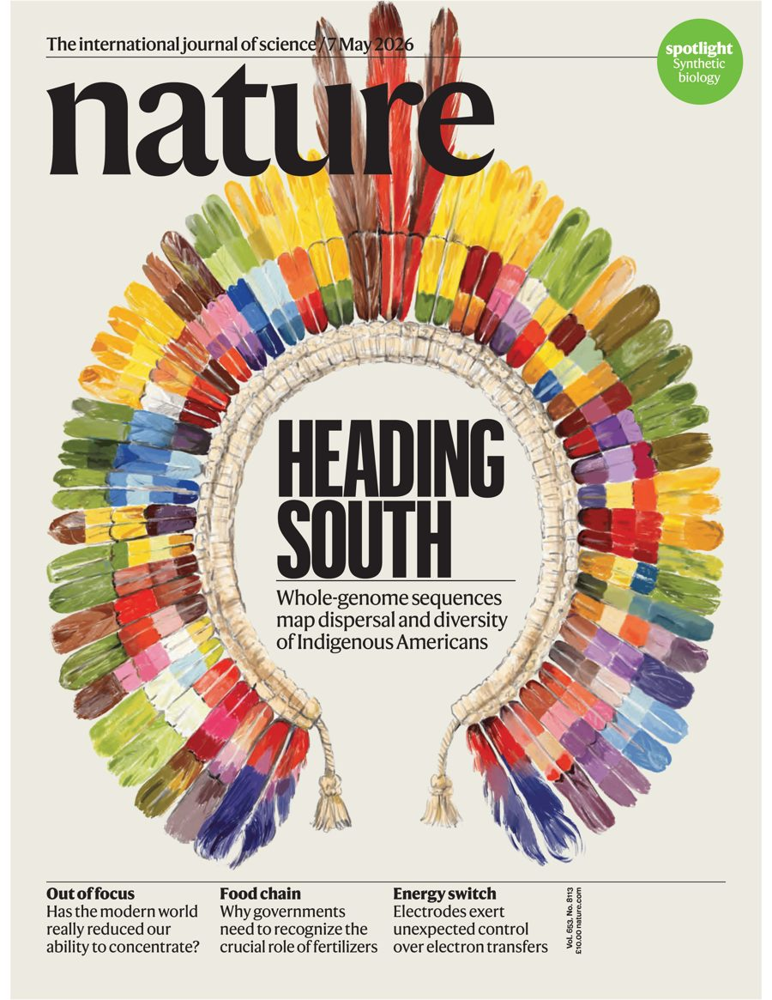

Deep Ancestries in Admixed Latin American Genomes
This project integrates large-scale genomic resources of living and ancient populations to investigate the impact of deep demographic and evolutionary history on modern Latin American populations.
Unravelling the genetic history of Indigenous American and descendant populations
Postdoctoral Researcher · Section for GeoGenetics, Globe Institute
University of Copenhagen, Denmark
I am a postdoctoral researcher at the Globe Institute's Section for GeoGenetics, University of Copenhagen, Denmark. In December 2026, I will begin a "la Caixa" Postdoctoral Junior Leader Fellowship at the Institut de Biologia Evolutiva (IBE-CSIC), Universitat Pompeu Fabra, in Barcelona, Spain.
My research combines population genetics, anthropological genetics, archaeogenetics, and bioinformatics to investigate the evolutionary history and genetic diversity of Indigenous and descendant populations across the Americas, both past and present. I investigate how migration, admixture, population growth or collapse, and adaptation have shaped human genetic diversity over time. My work aims to uncover the deep and recent population histories of the Americas while contributing to a more inclusive understanding of global human diversity through the study of historically underrepresented populations.
Currently, I am particularly interested in how ancient demographic and evolutionary processes have shaped the genetic diversity of Indigenous populations in the Americas. I have also been investigating the genetic history of non-indigenous Latin American populations, which are characterized by complex admixture. More recently, I have been exploring how these processes have influenced the phenotypic diversity of modern-day populations, including patterns of natural selection and clinically relevant variation.
To address these questions, I integrate large-scale genomic datasets from both living and ancient individuals with population genetic theory, statistical and demographic modeling, and computational approaches, to reconstruct human population history and explore the evolutionary forces shaping human diversity.
Starting my “la Caixa” Postdoctoral Junior Leader Fellowship at the Institut de Biologia Evolutiva (CSIC-UPF), Barcelona.
Joined the Section for GeoGenetics, Globe Institute, University of Copenhagen as a postdoctoral fellow.
New paper in JACC: Advances on the prevalence of pathogenic genetic variants across heart failure etiologies in an admixed population.
Our paper on the evolutionary history of Indigenous Americans is the cover feature of Nature (7 May 2026 issue, vol. 653). See the cover.
“The evolutionary history and unique genetic diversity of Indigenous Americans” is out in Nature, with a Research Briefing and wide media coverage.
Received the Seal of Excellence from the Marie Skłodowska-Curie Actions (MSCA Postdoctoral Fellowships 2025) for the proposal “Deep Population History of Admixed Americans”.
Giacomo Francesco Ena, whom I co-supervised, defended his PhD with cum laude honors at Universitat Pompeu Fabra.
Received the Young Investigator Attendance Award for the SMBE 2025 conference.
“Admixture’s impact on Brazilian population evolution and health” — the “DNA do Brasil” project — is published in Science.
My research spans interconnected themes in human population genomics, anthropological genetics, and archaeogenetics:
This project integrates large-scale genomic resources of living and ancient populations to investigate the impact of deep demographic and evolutionary history on modern Latin American populations.
A collaborative international effort designed to map the origins and genetic diversity of Indigenous populations through whole-genome sequencing.
A research initiative using whole-genome sequencing data to characterize genetic diversity in Brazilian populations and its health implications.
In collaboration with David Comas, I co-supervised a PhD student investigating the origins, genetic structure, and demography of Iberian and European Romani populations.
Photos from fieldwork, conferences, and highlights of our research.

Institut de Biologia Evolutiva, CSIC-UPF · Barcelona, Spain
University of Copenhagen · Copenhagen, Denmark
Institut de Biologia Evolutiva, CSIC-UPF · Barcelona, Spain
Institut de Biologia Evolutiva, CSIC-UPF · Barcelona, Spain
Fundação Faculdade de Medicina · São Paulo, Brazil
Universidade de São Paulo · São Paulo, Brazil
Instituto de Biociências, Universidade de São Paulo · São Paulo, Brazil
Universidade de São Paulo · Piracicaba, São Paulo (State), Brazil
Universidade Federal de Viçosa · Viçosa, Minas Gerais (State), Brazil
Universidade de São Paulo · São Paulo, Brazil
Supervisor: Prof. Tábita Hunemeier
Universidade de São Paulo · Piracicaba, São Paulo (State), Brazil
Supervisor: Prof. Marcio de Castro Silva-Filho
Universidade Federal de Viçosa · Viçosa, Minas Gerais (State), Brazil
Supervisor: Prof. Elizabeth Pacheco Batista Fontes
For the paper “The evolutionary history and unique genetic diversity of Indigenous Americans”
For my project proposal “Deep Population History of Admixed Americans submitted under the Horizon Europe Marie Skłodowska-Curie Actions call HORIZON-MSCA-2025-PF-01-01”
By the Society for Molecular Biology & Evolution
For the paper “A multidisciplinary overview on the Tupi-speaking people expansion”, by the American Journal of Biological Anthropology
For the paper “Population Histories and Genomic Diversity of South American Natives”, by the Society for Molecular Biology & Evolution
By the Sociedade Brasileira de Genética - SBG
By the University of São Paulo - USP
By the Brazilian national funding agency (Coordenação de Aperfeiçoamento de Pessoal de Nível Superior - CAPES)
For the paper “Genomic insight into the origins and dispersal of the Brazilian coastal natives”, by the American Society of Human Genetics - ASHG
Coordinating Committee of the Biological Sciences Course at the Universidade Federal de Viçosa - UFV
Project: Deep Ancestries in Admixed Latin American Genomes
Funding: ”la Caixa” Foundation (ID 100010434)
Institution: Universitat Pompeu Fabra, Spain
Total funding amount: EUR 320,100
Project: Indigenous American Genome Project
Funding: Agencia Estatal de Investigación - AEI (Spain) (JDC2022-049175-I)
Institution: Universitat Pompeu Fabra, Spain
Total funding amount: EUR 67,400
Project: The impact of demography, admixture, and evolution on the health of Brazilian populations
Funding: European Union Horizon 2020 programme under the Marie Skłodowska-Curie grant agreement No 945380
Institution: Universitat Pompeu Fabra, Spain
Total funding amount: EUR 95,160
Project: Establishment of a Reference Genome of the Brazilian Population
Funding: Fundação Faculdade de Medicina - FFM (Convênio 888379/2019 - Projeto Genoma Biociências)
Institution: Universidade de São Paulo, Brazil
Total funding amount: BRL 12,300
Project: Detection of Natural Selection Patterns in Native American Population by Machine Learning
Funding: Fundação de Amparo à Pesquisa do Estado de São Paulo - FAPESP (FAPESP/2021/12238-8)
Institution: Universidade de São Paulo, Brazil
Total funding amount: BRL 31,060.8
Project: Diversity and Evolution of Brazilian Populations
Funding: Fundação de Amparo à Pesquisa do Estado de São Paulo - FAPESP (FAPESP/2018/01371-6)
Institution: Universidade de São Paulo, Brazil
Total funding amount: BRL 96,499.2
Project: Genetic Structure and Ancestry of Brazilian Admixed Populations
Funding: Conselho Nacional de Desenvolvimento Científico e Tecnológico - CNPq (140155/2017-1)
Institution: Universidade de São Paulo, Brazil
Total funding amount: BRL 50,600
Project: Convergent evolution of Arabidopsis thaliana FtsH5 protease and its putative negative regulator FIP (FtsH5 interacting protein)
Funding: Conselho Nacional de Desenvolvimento Científico e Tecnológico - CNPq (130634/2013-1)
Institution: Escola Superior de Agricultura “Luiz de Queiroz” - Universidade de São Paulo, Brazil
Total funding amount: BRL 36,000
Project: Transcriptional expression analysis of Arabidopsis thaliana immune system genes related to response against geminivirus
Funding: Conselho Nacional de Desenvolvimento Científico e Tecnológico - CNPq (160335/2012-4)
Institution: Universidade Federal de Viçosa, Brazil
Total funding amount: BRL 4,800
Degree: PhD (defended with cum laude honors)
Project: Fine-scale genetic structure of Roma in Iberia
Institution: Universitat Pompeu Fabra, Spain
Nature Masterclasses on-demand course
European Molecular Biology Organization, EMBO/EMBL
University of Copenhagen · Copenhagen, Denmark
Our research has been featured in international and national media outlets, science magazines, and educational platforms.
Section for GeoGenetics
Globe Institute
University of Copenhagen
Museum of Natural History · Øster Voldgade 5-7
1350 København K